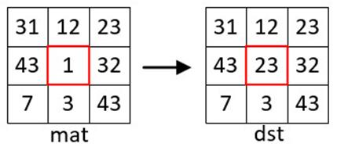
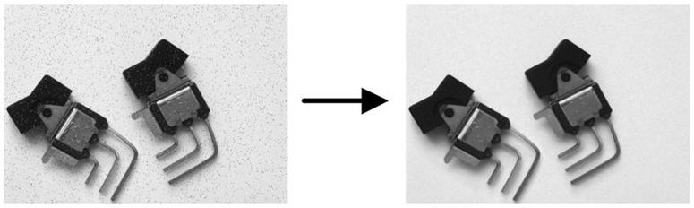

|
类型 |
滤波 |
|
描述 |
中值滤波法是一种非线性平滑技术，可用于消除孤立的噪声点。 中值滤波在滤除噪声的同时，能够保护信号的边缘，使之不被模糊，这些特性是线性滤波方法所不具有的。 原理：它将每一像素点的灰度值设置为该点某邻域窗口内的所有像素点灰度值的中值。例子如下所示：  别名：ZV_MedianBlur |
|
语法 |
ZV_ImpMedianBlur(src,dst,size)
参数： src：ZVOBJECT类型，源图像为单通道或三通道图像 dst：ZVOBJECT类型，滤波后图像 size：滤波器尺寸，范围[1,201]，最好为奇数，若输入偶数算子内部会自动转换成最接近的奇数 |
|
适用控制器 |
支持ZV功能或者5系列以上的控制器 |
|
例子 |
 ZVOBJECT src,dst ZV_ImgRead(src,"blur.jpg",0) '以原图像格式读取图片 ZV_ImpMedianBlur(src,dst,3) '3*3中值滤波 |